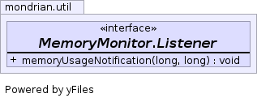

public static interface MemoryMonitor.Listener
MemoryMonitor client implements the Listener
interface and registers with the MemoryMonitor.
When the MemoryMonitor detects that free memory is
low, it notifies the client by calling the client's
memoryUsageNotification method. It is important
that the client quickly return from this call, that the
memoryUsageNotification method does not do a lot of
work. It is best if it simply sets a flag. The flag should be
polled by an application thread and when it detects that the
flag was set, it should take immediate memory relinquishing operations.
In the case of Mondrian, the present query is aborted.
| Modifier and Type | Method and Description |
|---|---|
void |
memoryUsageNotification(long usedMemory,
long maxMemory)
When the
MemoryMonitor determines that the
Listener's threshold is equal to or less than
the current available memory (post garbage collection),
then this method is called with the current memory usage,
usedMemory, and the maximum memory (which
is a constant per JVM invocation). |
void memoryUsageNotification(long usedMemory, long maxMemory)
MemoryMonitor determines that the
Listener's threshold is equal to or less than
the current available memory (post garbage collection),
then this method is called with the current memory usage,
usedMemory, and the maximum memory (which
is a constant per JVM invocation).
This method is called (in the case of Java5) by a system thread associated with the garbage collection activity. When this method is called, the client should quickly do what it needs to to communicate with an application thread and then return. Generally, quickly de-referencing some big objects and setting a flag is the most that should be done by implementations of this method. If the implementor chooses to de-reference some objects, then the application code must be written so that if will not throw a NullPointerException when such de-referenced objects are accessed. If a flag is set, then the application must be written to check the flag periodically.
usedMemory - the current memory used.maxMemory - the maximum available memory.